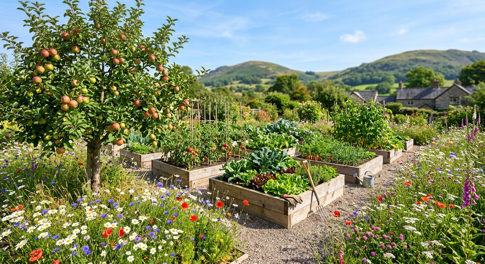

Gardening 🌱
Welcome to my garden journal! Here I track my fruit trees, raised vegetable beds, and wildflower patches as they shift through the seasons.

Environmentally Friendly Gardening
Creating a sustainable outdoor space is all about working hand-in-hand with nature. By encouraging local biodiversity, using peat-free compost, and avoiding harsh chemical pesticides, you can build a resilient micro-ecosystem that welcomes pollinators and beneficial wildlife.
For expert advice, planting calendars, and step-by-step guides on sustainable growing, I regularly use Gardeners' World.